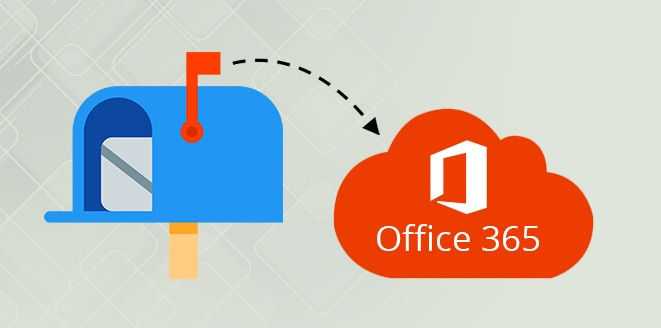

Some Realities To Know About Backup Office 365 Mailbox
In today's business world, it's more important than ever to have a reliable backup solution for your Office 365 mailboxes. There are many reasons why you might need to restore your mailbox from a backup, including accidental deletions, data loss, or malware attacks. Having a reliable backup solution can give you peace of mind knowing that you can always restore your mailbox if something goes wrong.
Critical Reasons Why You Need Backup for Office 365
Office 365 is the most successful service of its kind now, with more than 200 million users worldwide in late 2019. Microsoft has continually developed the service since it launched, with a consistently proven track record of success.
In addition to being cost-efficient and easy to use, it's also natural that many conclude quicker than in the past that they will require Microsoft Office 365 to deal with Outlook, Exchange, SharePoint, and file storage compared to running their own servers.
To a certain extent, Microsoft does offer data protection features, but this is not to say it completely lacks such capabilities. Microsoft offers several tools and features throughout the Office 365 suite that together create what you would call a baseline toolkit for guarding your Office 365 data. Nonetheless, if your business depends on having an effective backup and recovery plan, these tools are virtually useless.
Microsoft is not responsible for your data
Microsoft is responsible for keeping the online cloud infrastructure available for your use, but you and Office 365 are liable for protecting the data you host on these platforms. This is the Apache CloudStack self-service model, in which both parties are responsible for safeguarding data.
Microsoft has some tools to provide protection and retention solutions to O365, but it is still your responsibility to protect your personal information. Practice industry-best security best practices, such as the 3-2-1 backup rule. This implies there should always be at least three safe backup copies of your data, stored across at least two different media, and at least one copy is accessible remotely.
1. No Point-in-Time Recovery for exchange online preventing easy ransomware recovery
O365 does not allow Exchange Online users to take backups. This would permit a hacker to gain access to their O365 email if a harmful user were granted access. Instead of taking a regular backup, the more recent a backup is, the easier it will be to restore the content to its original state.
Office 365 makes it possible to restore individual messages deleted from a mailbox for a stipulated time period, or restore a mistakenly deleted mailbox, but does not allow restoring items to an original state prior to deletion. This is a major challenge for organizations.
Microsoft declares that they will always provide service and consecutive months ensuring you might access your Exchange Online mailbox and the particular copy of your data, but they do not back up the data itself. This indicates that their setup is exceedingly risky, especially if ransomware encrypts your Exchange Online mailbox.

2. Manage O365 Backups for multiple organizations from a single tool
Many O365 customers are required to administer their teams across different business organizations. In the past, managers needed to log in to each organization separately to provide any type of retention services. Office 365 Backup allows you to centrally manage backups across multiple organizations.
It also enables MSPs to run and manage backups for all of the customers they represent from a single multi-tenant console. Built-in multi-tenant interfaces for backing up all mailboxes, emails, attachments, calendars, contacts, Microsoft Teams chats, and files stored on the OneDrive and SharePoint servers at numerous detective agencies.
3. Built-in Data Governance tools are only available in certain versions of O365
One of the most crucial built-in tools discussed throughout the previous pages is available in only the Enterprise E3 versions of O365, and even that requires some specific privileges.
If you're using a different version than what is listed on this page, the data protection capabilities of Office 365 Backup are significantly more restrictive. Office 365 Backup works with a broader range of Office 365 subscription types.
In the end, those with Office 365 mailboxes should backup their email data to protect their data and reduce the risk of losing emails. Backups help protect data in the event of hardware failure, theft, natural disaster, accidental deletion, or user error.